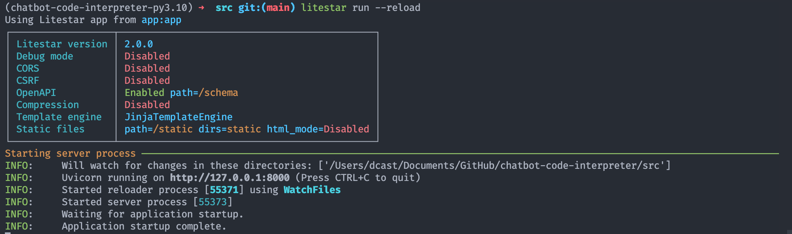
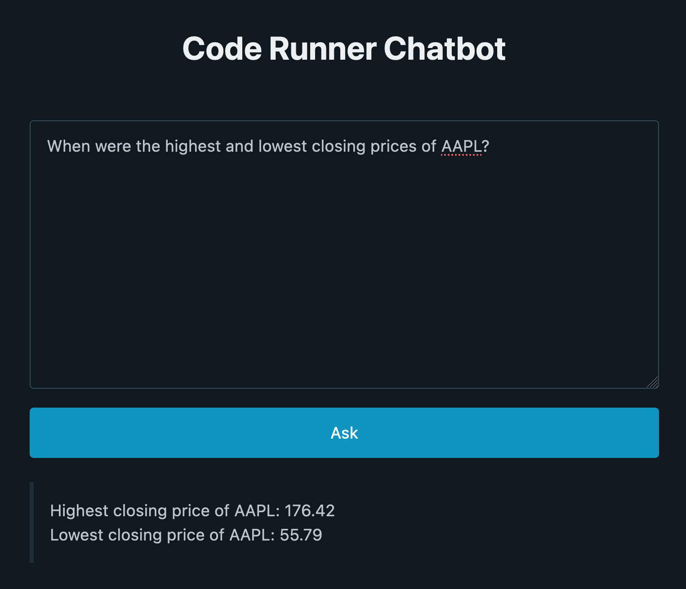

Create a Code Interpreter Chatbot with Pyodide, LangChain, and OpenAI
OpenAI has been giving access to users to the Code Interpreter plugin and people are loving it. I wanted to replicate it outside of ChatGPT, so I created my own (simpler) version, specifically to analyze and visualize data.
Following that, I figured more people might be interested in building user-facing chatbots capable of running code in the browser. So I put together this tutorial. It will teach you how to create a simple but powerful chatbot that uses Pyodide, LangChain, and OpenAI to generate and run code in the browser for a user.
C’mon, let’s get to work!
Prerequisites
To make the most of the tutorial, you should review these topics before getting started:
- What Pyodide is.
- What LangChain is.
- The basics of Python backend servers such as Litestar or FastAPI.
In addition, you must create an account at OpenAI.
Building a Code Interpreter Chatbot
Security and scalability are two major challenges in developing a user-facing chatbot that’s capable of executing code. Companies like Replit must manage extremely complex infrastructures in order to provide users with online IDEs.
We’re fortunate, however, because what we’re doing in this tutorial isn’t as complex as Replit. We can use a simple solution: Pyodide. Pyodide is a CPython port to WebAssembly/Emscripten that lets Python to run in the browser.
There are some restrictions to what you can do with Pyodide, such as the fact that not every package is compatible with it and that the maximum memory it can manage is 2GB. But it is more than adequate to process small to medium datasets, which is what you’ll do in this tutorial.
The chatbot you’ll build will work as follows:
- A user asks a question about a preloaded dataset.
- That question, along with a predefined prompt, is sent to the OpenAI API.
- The API responds with a code snippet that helps answer the question.
- The code snippet is executed on the browser using Pyodide, and the result is displayed to the user.
Next, you’ll set up your local environment.
Set Up Your Local Environment
Before you begin, you must first set up a few things. Follow these steps:
- Install Python 3.10.
- Install Poetry. It’s optional but highly recommended.
- Clone the project’s repository:
From the root folder of the project, install the dependencies:
- Using Poetry: Create the virtual environment in the same directory as the project and install the dependencies:
- Using venv and pip: Create a virtual environment and install the dependencies listed in
requirements.txt:
Open
src/.env-example, add your OpenAI secret key in the corresponding variable, and save the file as.env.
You should now have a virtual environment set up with the necessary libraries and a local copy of the repository. Your project structure should look like this:
chatbot-code-interpreter
├── LICENSE
├── README.md
├── poetry.lock
├── pyproject.toml
├── requirements.txt
├── src
│ ├── app.py
│ ├── config.py
│ ├── prompts
│ │ ├── system.prompt
│ │ └── user.prompt
│ ├── static
│ │ └── all_stocks.csv
│ ├── templates
│ │ └── index.html
│ ├── utils.py
│ └── .env-example
└── .venv/These are the most relevant files and directories in the project:
poetry.lockandpyproject.toml: These files contain the project’s specifications and dependencies. They’re used by Poetry to create a virtual environment.requirements.txt: This file contains a list of Python packages required by the project.src/app.py: This file contains the code of the chatbot.src/config.py: This file contains project configuration details such as OpenAI’s API key (read from a.envfile), and the path to the prompts used by the chatbot.src/prompts/: This directory contains the system and user prompts used by the chatbot. I’ve found that keeping the prompts in text files makes it easier to manage them instead of using strings.src/staticandsrc/templates: These files contain the data used in the example and the HTML template used for the chatbot’s interface. You’ll use a dataset with prices and the volume of a group of stocks.src/utils.py: This file contains a function you use to read the prompts fromsrc/prompts..env-example: This file is a sample file that provides the required environment variables you should provide. In this case, you use it to pass OpenAI’s API key to your application and choose the name the chatbot should use behind the scenes (gpt-3.5.-turbo)..venv/: This directory contains the project’s virtual environment.
Alright! On to the exciting stuff now.
Run Code on the Browser with Pyodide
In this step, you’ll configure Pyodide to run Python in the browser. You’ll load pyodide.js, start it, import the required libraries, and define an event handler to process the questions asked by the user.
To make the analysis simpler, I’ll split the code of src/templates/index.html into two sections. In the first section, you’ll only look at the contents of <head> and <body>, and in the second part, you’ll go through the JavaScript code defined in <script>.
Here’s part one:
<!DOCTYPE html>
<html lang="en">
<head>
<meta charset="UTF-8" />
<meta http-equiv="X-UA-Compatible" content="IE=edge" />
<meta name="viewport" content="width=device-width, initial-scale=1.0" />
<title>Code Runner Chatbot</title>
<link
rel="stylesheet"
href="https://cdn.jsdelivr.net/npm/@picocss/pico@1/css/pico.min.css"
/>
<script src="https://cdn.jsdelivr.net/pyodide/v0.23.2/full/pyodide.js"></script>
</head>
<body>
<main class="container">
<h1 style="text-align:center;">Code Runner Chatbot</h1>
<textarea
name="query"
id="query"
cols="30"
rows="10"
placeholder="Ask a question about the dataset"
></textarea>
<button id="ask-btn">Ask</button>
<blockquote id="output"></blockquote>
</main>
<script>
<!-- SECOND PART OF CODE -->
</script>
</body>
</html>This section of code loads the necessary libraries and styles, as well as defines the chatbot’s user interface. Here’s how it works:
- Lines 5 to 10 set a title for the page, load
pyodide.jsandpico.css(a minimal CSS framework), and define a couple of standard meta tags. - Lines 14 to 20 define a simple UI that lets users input a question, and submit them by clicking on a button, to get answers about the dataset.
Then, let’s go through the JavaScript code defined in <script>. This code will load Pyodide, install the required libraries, make the data available for use in Pyodide, and set an event handler to process the user’s question.
Here’s how it looks:
const queryTextArea = document.getElementById("query");
const outputElement = document.getElementById("output");
const askBtn = document.getElementById("ask-btn");
async function setupPyodide() {
let pyodide = await loadPyodide();
await pyodide.loadPackage(["pandas", "numpy"]);
const response = await fetch("/static/all_stocks.csv");
const fileContentArrayBuffer = await response.arrayBuffer();
const fileContent = new Uint8Array(fileContentArrayBuffer);
pyodide.FS.writeFile("all_stocks.csv", fileContent);
return pyodide;
}
let pyodideReadyPromise = setupPyodide();
askBtn.addEventListener("click", async (event) => {
let pyodide = await pyodideReadyPromise;
const query = queryTextArea.value;
const df_info = await pyodide.runPythonAsync(`
import pandas as pd
df = pd.read_csv('all_stocks.csv')
pd.set_option('display.max_columns', None)
df.head(3).T
`);
const data = new FormData();
data.append("query", query);
data.append("df_info", df_info);
try {
const response = await fetch("/ask", {
method: "POST",
body: data,
});
if (response.ok) {
const result = await response.text();
const output = await pyodide.runPythonAsync(result);
outputElement.innerText = output;
} else {
console.error("Error:", response.statusText);
}
} catch (error) {
console.error("Error:", error);
}
});This code loads Pyodide, installs the necessary libraries, makes the data accessible in Pyodide, and finally sets an event handler to process the user’s question. It works as follows:
- Lines 1 to 3 select the elements of the DOM that you’ll be interacting with.
- Lines 5 to 18 define a helper function you use to load Pyodide and the data. You first load Pyodide, and install
pandasandnumpy. Then, you fetch the dataset and write it into Pyodide’s filesystem, to make it available to use the data in it. - Lines 20 to 52 define the event handler of a click on
ask-btn. This means that whenever that button is clicked, this event will execute. The handler does a few things:- Lines 21 to 33 wait until Pyodide is fully loaded, extract the question that the user has asked, get the first rows of the dataset (which is how the model can know how to generate the right code), and put together the data to send in a POST request.
- Lines 35 to 51 make a POST request to “/ask” with the parameters mentioned earlier. When the server responds, that text is run using Pyodide, and the result is then saved in
output.
That’s it! Next, you’ll create the chatbot application.
Create the Chatbot
Now, you’ll create a simple application that will allow users to make questions to the chatbot about the dataset.
Take a look at the code in src/app.py:
from dataclasses import dataclass
from pathlib import Path
from langchain import LLMChain
from langchain.chat_models import ChatOpenAI
from litestar import Litestar, get, post
from litestar.contrib.jinja import JinjaTemplateEngine
from litestar.enums import RequestEncodingType
from litestar.params import Body
from litestar.response_containers import Template
from litestar.static_files.config import StaticFilesConfig
from litestar.template.config import TemplateConfig
from typing_extensions import Annotated
from config import OpenAI
from utils import get_prompt
chain_create = LLMChain(
llm=ChatOpenAI(
temperature=0,
model_name=OpenAI.model_name,
openai_api_key=OpenAI.secret_key,
),
prompt=get_prompt(),
)
@get(path="/", name="index")
def index() -> Template:
return Template(name="index.html")
@dataclass
class Query:
query: str
df_info: str
@post(path="/ask", name="ask", sync_to_thread=True)
def ask(
data: Annotated[Query, Body(media_type=RequestEncodingType.MULTI_PART)],
) -> str:
query = data.query
df_info = data.df_info
chain_result = chain_create.run(
{
"df_info": df_info,
"query": query,
}
)
result = chain_result.split("```python")[-1][:-3].strip()
return result
app = Litestar(
route_handlers=[index, ask],
static_files_config=[
StaticFilesConfig(directories=["static"], path="/static", name="static"),
],
template_config=TemplateConfig(
engine=JinjaTemplateEngine, directory=Path("templates")
),
)This code provides users with a straightforward interface, allowing them to interact with the chatbot and ask questions about the dataset. Here’s how it works:
- Lines 1 to 16 import the required libraries. The application uses Litestar, which is a bit verbose; hence, you’ll notice many import statements. But there’s no real mystery to it, it’s pretty similar to FastAPI or Flask.
- Lines 18 to 25 create an LLMChain to interact with the model using the prompt read from
get_prompt, which is a function defined inutils.pyreads the prompts defined insrc/prompts. The chain takes the prompts, the user’s query, and the first three rows from the dataset, and asks the model for a completion. Make sure to read the prompt to see how they work. - Lines 28 to 30 define the index route, which returns the
index.htmlwhen a user visits/. - Lines 33 to 54 define a dataclass used to validate the parameters of the request made to
/askand define/ask, which is an endpoint that helps users answer questions about the dataset by generating relevant code. - Lines 57 to 65 set up the Litestar app, incorporating the previously defined routes and the locations of the templates and static files.
To test the app, cd into src/ and run this code in a terminal within the virtual environment:
If everything goes well, you’ll see an output similar to this one:

Next, open http://127.0.0.1:8000 on your browser. You should see the app’s UI.
Try asking a question to the chatbot. For example, you can ask when were the highest and lowest closing prices of AAPL.
You should get the following result:

That’s all! You’ve built a chatbot capable of running code on your browser.
Next steps
I won’t cover deployment in this article. This application is pretty standard, so simply choose a method that works well for you and your organization.
I like using NGINX with Gunicorn and Uvicorn workers and wrote a tutorial about it. That tutorial uses FastAPI, but the same process would also work with Litestar.
Conclusion
Way to go! By now, you’ve built a chatbot that can run Python code on the browser and help you answer complex questions about a dataset.
This is what you’ve covered in this tutorial:
- How to integrate Pyodide into a web app to run code in the browser.
- How to use LangChain’s LLMChain to generate Python code.
- How to build a simple application with Litestar.
I hope this is useful. Let me know if you have questions.
The code for this tutorial is available on GitHub.
Citation
@online{castillo2023,
author = {Castillo, Dylan},
title = {Create a {Code} {Interpreter} {Chatbot} with {Pyodide,}
{LangChain,} and {OpenAI}},
date = {2023-05-12},
url = {https://dylancastillo.co/posts/code-interpreter-chatbot-pyodide-langchain-openai.html},
langid = {en}
}